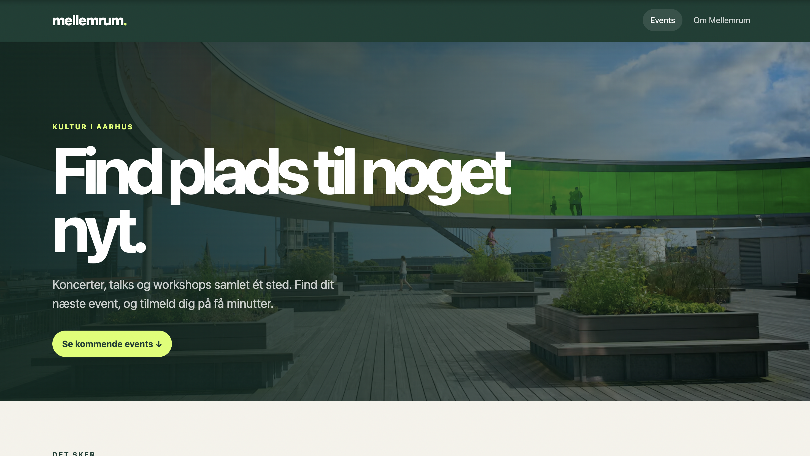
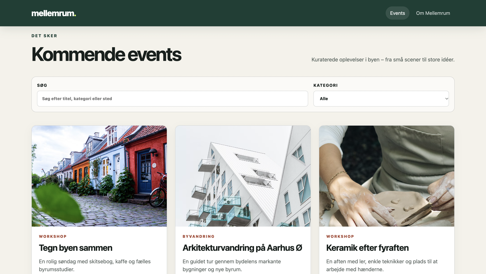
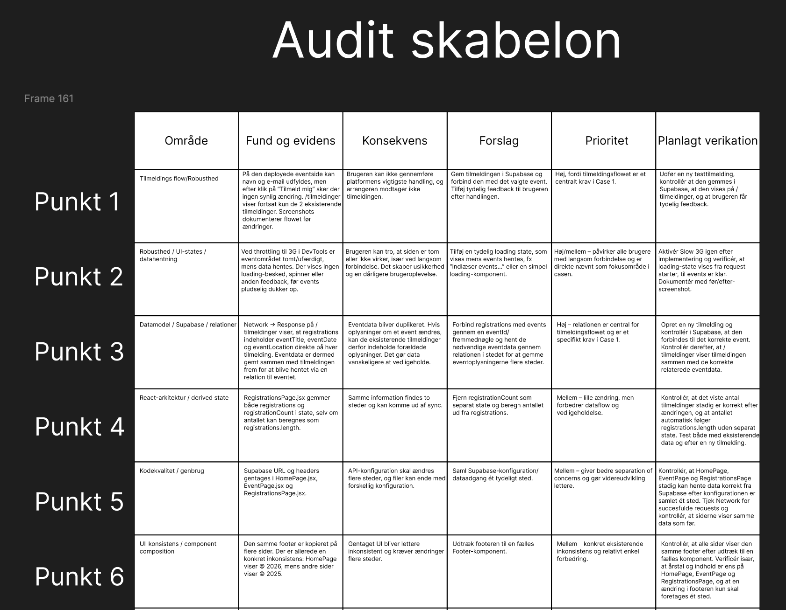
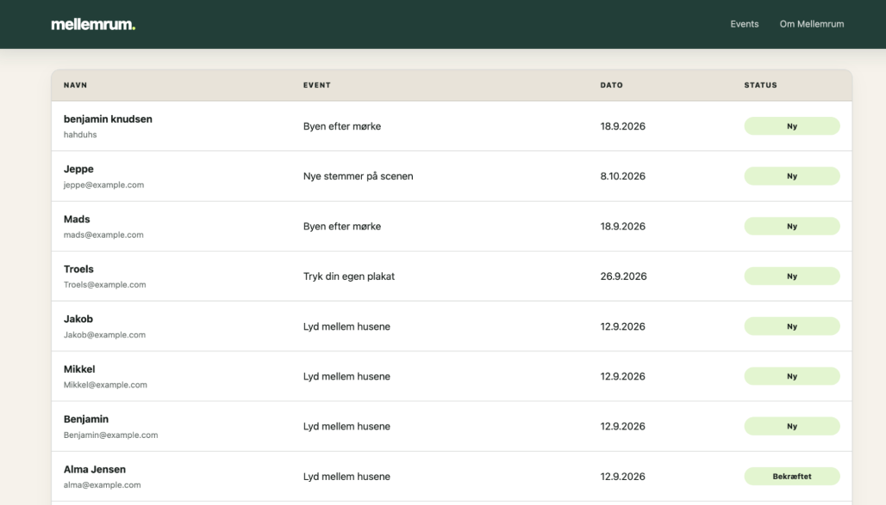
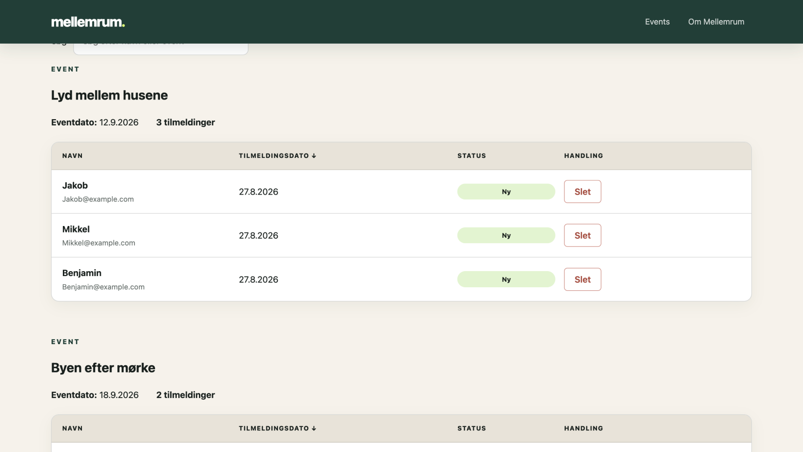
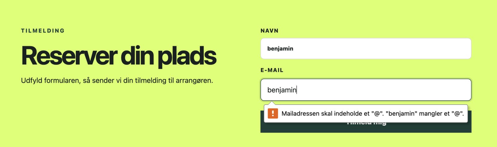
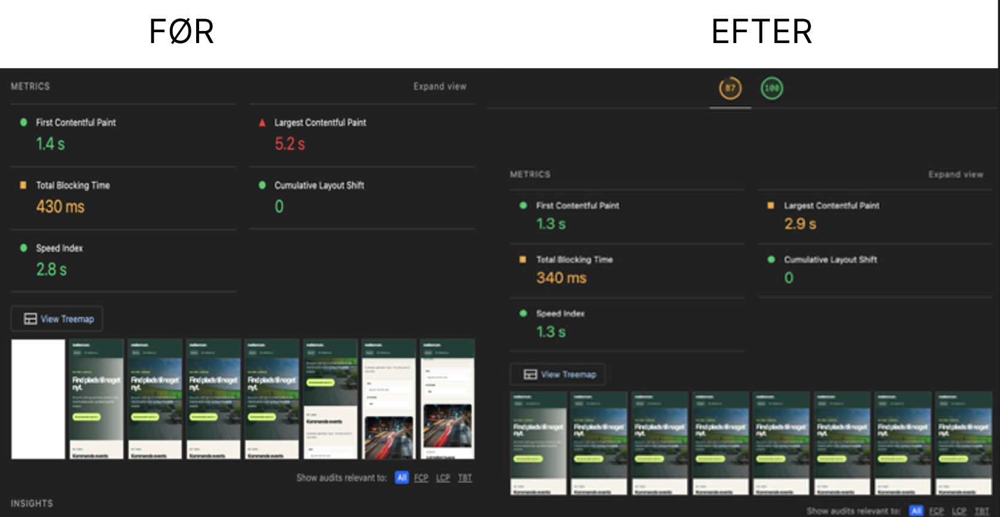
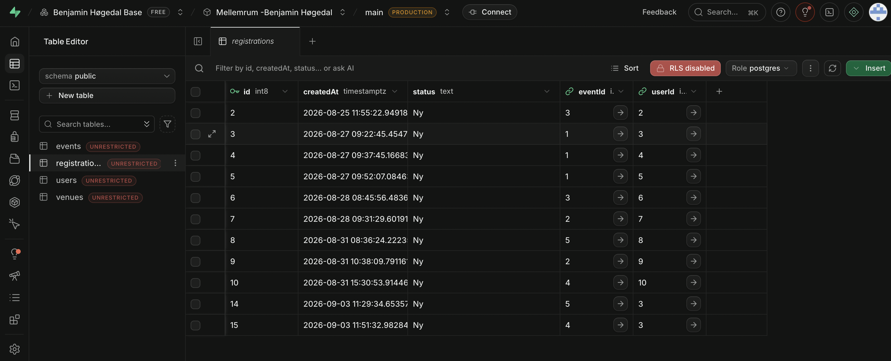

21
auditpunkter
CASE 1 · PRODUCT OPTIMIZATION
Jeg overtog en hurtigt bygget React-prototype til kulturplatformen Mellemrum og gjorde den mere robust og lettere at bygge videre på.


Case 1 – Fra prototype til produktionsklar React-løsning
Audit, prioritering, kode og test
Individuelt
2 uger · aug.–sep. 2026
01 · UDFORDRINGEN
Mellemrum samler koncerter, talks og workshops i Aarhus. Prototypen så færdig ud, men tilmeldinger blev kun skrevet i konsollen, de samme data lå kopieret flere steder, og hver side havde sin egen Supabase-opsætning. Min opgave var at finde de vigtigste problemer, rette dem i den eksisterende kode og få løsningen deployet. Jeg byggede ikke platformen – jeg forbedrede den.
02 · UNDERSØGELSE OG PRIORITERING
Jeg gennemgik løsningen lokalt og på den deployede version med DevTools og Lighthouse. Hvert fund kom i en audit med evidens, konsekvens, forslag, prioritet og planlagt test. Jeg prioriterede efter, hvad der stoppede brugeren eller arrangøren: først tilmeldingsflowet og datamodellen, som var casens kernekrav, så feedback ved langsomme svar og billedstørrelser, og til sidst kodekvalitet og overblik.

auditpunkter
pull requests
tabeller
03 · LØSNING
Tilmeldingsflow + datamodel
Formularen gemmer nu tilmeldingen i Supabase. Datamodellen er delt op i fire relaterede tabeller: events peger på venues, og registrations peger på både events og users. Før lå eventets titel, dato og sted kopieret ind på hver tilmelding, og samme venue stod flere gange. Nu findes hver oplysning ét sted, og en bruger, der tilmelder sig igen, bliver genkendt på e-mailen. Den interne side henter tilmeldinger med event- og brugerdata i ét request.
id, title, date, venueName, venueAddress, venuePostalCode, venueCity, venueWebsite, category, image, price
id, createdAt, status, name, email, eventTitle, eventDate, eventLocation
id, name, address, postalCode, city, website
id, title, date, category, image, price, venueId → venues.id
id, name, email
id, createdAt, status, eventId → events.id, userId → users.id
Intern side
Tilmeldingerne er grupperet efter event med dato og antal, og arrangøren kan søge, sortere og slette med bekræftelse. Eventdato og tilmeldingsdato står hver for sig, fordi én "Dato"-kolonne var tvetydig.


Robusthed
Knappen viser "Sender…", og bagefter kommer en kvittering eller en fejlbesked. Navn og gyldig e-mail er påkrævet – før kunne man tilmelde sig helt uden oplysninger. Siderne viser en loading-tekst, mens data hentes.

04 · RESULTAT OG DOKUMENTATION
Lighthouse Performance · mobil · deployet
Largest Contentful Paint · mobil · deployet
Alle 21 punkter blev testet lokalt og langt de fleste igen på GitHub Pages efter merge. Tilmeldingsflowet er kontrolleret hele vejen: ny tilmelding, ny række i Supabase med eventId og userId, vist under det rigtige event. Billedoptimeringen er målt med Lighthouse på mobil på den deployede version før og efter. Det er enkeltmålinger, så de viser en retning, ikke et facit.


05 · REFLEKSION
Desktop-performance (Lighthouse 62) valgte jeg fra, fordi mobil allerede var forbedret. Løsningen mangler stadig fejl- og tom-tilstande: fejler Supabase, bliver siden ved med at "indlæse", og en søgning uden resultater giver et tomt felt. E-mailfeltet mangler en rigtig label, og starter.sql følger ikke den nye datamodel. Næste skridt er de tilstande, tilgængelighed og RLS, så tilmeldinger ikke kan læses af alle. Jeg lærte mest af datamodellen: når data ligger ét sted, bliver resten af koden enklere.
06 · FORRETNINGSPOTENTIALE
Brugerne får tilmeldinger, der rent faktisk kommer igennem, og besked om det. Arrangørerne får overblik pr. event og kan rette events uden at gå ind i databasen. Mellemrum får renere data, som er billigere at bygge videre på.
Case 1 · Prøv det selv
Startprojektet og den visuelle identitet er lavet af underviseren.
Jeg brugte generativ AI (ChatGPT) som sparringspartner, når jeg var i tvivl om en løsning undervejs, og til at strukturere audit-skabelonen. Fund, prioritering, kode og test er mit eget arbejde. Teksten på denne side er formuleret med hjælp fra AI ud fra mit eget materiale.